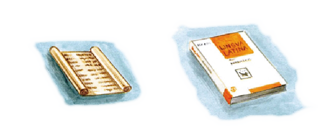

FAMILIA RÓMÁNA
I
Iūlius vir Rōmānus est. Aemilia fēmina Rōmāna est. Mārcus est puer Rōmānus. Quīntus quoque puer Rōmānus est. Iūlia est puella Rōmāna.
Mārcus et Quīntus nōn virī, sed puerī sunt. Virī sunt Iūlius et Mēdus et Dāvus. Aemilia et Dēlia et Syra sunt fēminae. Estne fēmina Iūlia? Nōn fēmina, sed parva puella est Iūlia.
Iūlius, Aemilia, Mārcus, Quīntus, Iūlia, Syra, Dāvus, Dēlia Mēdusque sunt familia Rōmāna. Iūlius pater est. Aemilia est māter. Iūlius pater Mārcī et Quīntī est. Iūlius pater Iūliae quoque est. Aemilia est māter Mārcī et Quīntī et Iūliae. Mārcus fīlius Iūliī est. Mārcus fīlius Aemiliae est. Quīntus quoque fīlius Iūliī et Aemiliae est. Iūlia est fīlia Iūliī et Aemiliae.
Quis est Mārcus? Mārcus puer Rōmānus est. Quis pater Mārcī est? Iūlius pater Mārcī est. Quae est māter Mārcī? Māter Mārcī est Aemilia. Quae est Iūlia? Iūlia est puella Rōmāna. Quae māter Iūliae est? Aemilia māter Iūliae est. Pater Iūliae est Iūlius. Iūlia fīlia Iūliī est. Quī sunt fīliī Iūliī? Fīliī Iūliī sunt Mārcus et Quīntus. Mārcus, Quīntus Iūliaque sunt trēs līberī. Līberī sunt fīliī fīliaeque. Mārcus et Quīntus et Iūlia sunt līberī Iūliī et Aemiliae. In familiā Iūliī sunt trēs līberī: duo fīliī et ūna fīlia.
II
Estne Mēdus fīlius Iūliī? Mēdus fīlius Iūliī nōn est, Mēdus est servus Iūliī. Iūlius dominus Mēdī est. Iūlius dominus servī est. Dāvus quoque servus est. Mēdus et Dāvus duo servī sunt. Iūlius est dominus Mēdī et Dāvī. Iūlius dominus servōrum est et pater līberōrum.
Estne Dēlia fīlia Aemiliae? Dēlia nōn est fīlia Aemiliae, Dēlia ancilla Aemiliae est. Aemilia domina Dēliae est. Aemilia domina ancillae est. Syra quoque ancilla est. Dēlia et Syra duae ancillae sunt. Aemilia domina ancillārum est.
Cuius servus est Dāvus? Dāvus servus Iūliī est. Cuius ancilla est Syra? Syra est ancilla Aemiliae.
Quot līberī sunt in familiā? In familiā Iūliī sunt trēs līberī. Quot fīliī et quot fīliae? Duo fīliī et ūna fīlia. Quot servī sunt in familiā? In familiā sunt centum servī. In familiā Iūliī sunt multī servī, paucī līberī. Iūlius est dominus multōrum servōrum.
‘Duo’ et ‘trēs’ numerī sunt. ‘Centum’ quoque numerus est. Numerus servōrum est centum. Numerus līberōrum est trēs. Centum est magnus numerus. Trēs parvus numerus est. Numerus servōrum est magnus. Numerus līberōrum parvus est. In familiā Iūliī magnus numerus servōrum, parvus numerus līberōrum est.
Mēdus servus Graecus est. Dēlia est ancilla Graeca. In familiā Iūliī sunt multī servī Graecī multaeque ancillae Graecae. Estne Aemilia fēmina Graeca? Aemiliae nōn est fēmina Graeca, sed Rōmāna. Iūlius nōn vir Graecus, sed Rōmānus est.
Sparta oppidum Graecum est. Sparta, Delphī Tūsculumque tria oppida sunt: duo oppida Graeca et ūnum oppidum Rōmānum. In Graeciā et in Italiā magnus numerus oppidōrum est. In Galliā est magnus numerus fluviōrum. Fluviī Galliae magnī sunt. Magnīne sunt fluviī Āfricae? In Āfricā ūnus fluvius magnus est: Nīlus; cēterī fluviī Āfricae parvī sunt. Suntne magnae īnsulae Graecae? Crēta et Euboea duae īnsulae magnae sunt; cēterae īnsulae Graecae sunt parvae.
III
Quis est Cornēlius? Cornēlius dominus Rōmānus est. Iūlius et Cornēlius duo dominī Rōmānī sunt. Mēdus nōn est servus Cornēliī. Mēdus servus Iūliī est.
Cornēlius: “Cuius servus est Mēdus?”
Iūlius: “Mēdus servus meus est.”
Cornēlius: “Estne Dāvus servus tuus?”
Iūlius: “Dāvus quoque servus meus est. Servī meī sunt Mēdus et Dāvus et cēterī multī...”
Cornēlius: “Estne Dēlia ancilla tua?”
Iūlius: “Dēlia est ancilla mea, et Syra quoque ancilla mea est. Ancillae meae sunt Dēlia et Syra et cēterae multae. Familia mea magna est.”
Cornēlius: “Quot servī sunt in familiā tuā?”
Iūlius: “In familiā meā sunt centum servī.”
Cornēlius: “Centum servī! Magnus est numerus servōrum tuōrum!”

LIBER TVVS LATÍNVS
Ecce duo librī Latīnī: liber antīquus et liber novus. LINGVA LATÍNA est prīmus liber tuus Latīnus. Titulus librī tuī est ‘LINGVA LATÍNA’. Liber tuus nōn antīquus, sed novus est.
In LINGVÁ LATÍNÁ sunt multae pāginae et multa capitula: capitulum prīmum, secundum, tertium, cētera. ‘IMPERIVM RÓMÁNVM’ est titulus capitulī prīmī. Titulus capitulī secundī est ‘FAMILIA RÓMÁNA’. In capitulō secundō sunt sex pāginae. In pāginā prīmā capitulī secundī multa vocābula nova sunt: vir, fēmina, puer, puella, familia, cētera. Numerus vocābulōrum Latīnōrum magnus est!